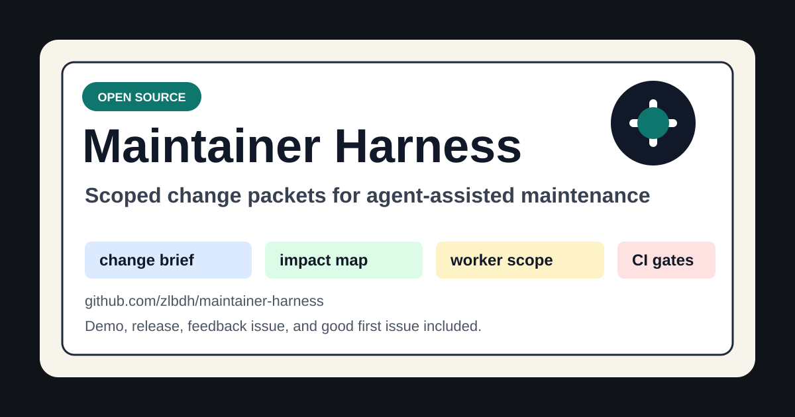

Scope
Each worker receives explicit task cards and allowed paths before implementation starts.
Open source maintainer tool
Scoped packets for agent-assisted maintenance. Turn Codex and other agent work into change briefs, impact maps, bounded task cards, validation evidence, and release-ready review trails.

90-second path
The sample packets are synthetic. They validate the workflow shape without cloning product repositories, opening worktrees, or using production credentials.
git clone https://github.com/zlbdh/maintainer-harness.git
cd maintainer-harness
.\scripts\checks\validate-repos.ps1
.\scripts\bootstrap\verify-workspace.ps1
.\scripts\checks\validate-change.ps1 -Path examples\sample-change
.\scripts\checks\validate-change.ps1 -Path examples\issue-to-review
.\scripts\checks\check-security-posture.ps1 -SkipSensitivePatternWhat the harness keeps visible
Each worker receives explicit task cards and allowed paths before implementation starts.
Change packets keep affected repositories, interfaces, dependencies, and risks in files.
Commands and skipped checks are recorded as evidence instead of chat-only claims.
MCP examples stay read-only, generated artifacts stay ignored, and posture checks run in CI.
Feedback wanted
Maintainer feedback is tracked publicly. The easiest contribution is to run the demo and report anything unclear, slow, surprising, or too Windows-specific.